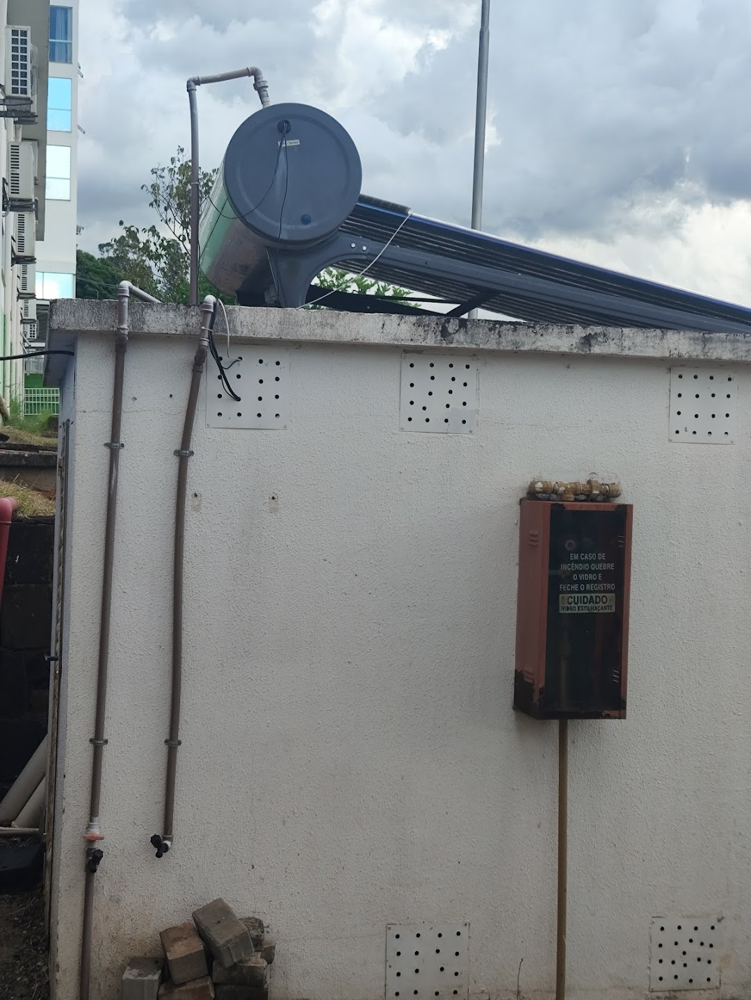
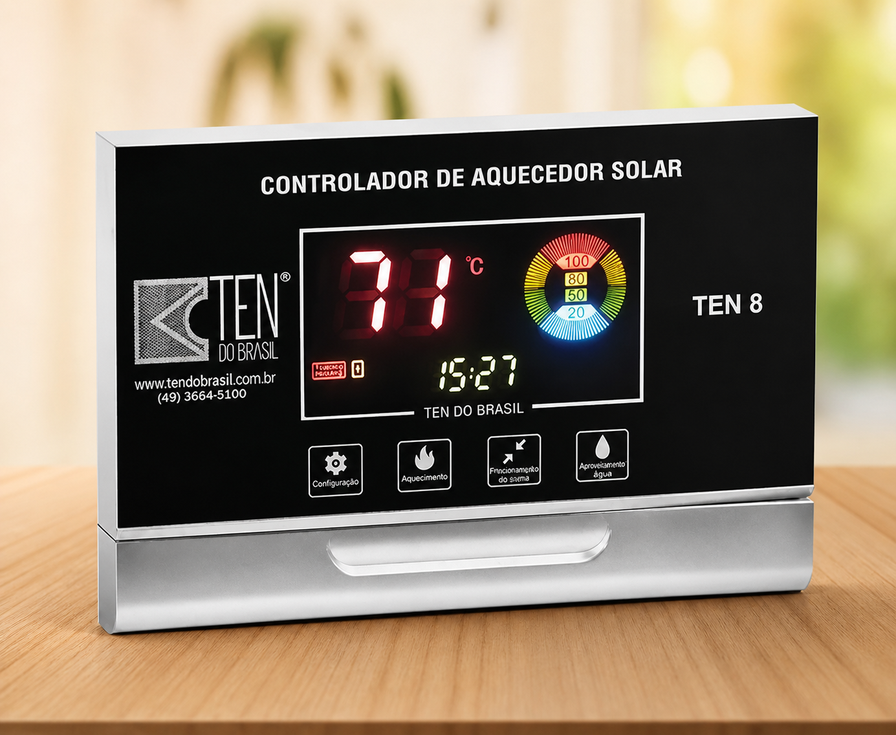

Água quente todos os dias.
Sem custo. Sem impacto.
Sistema de aquecimento solar instalado no IFSC Campus Chapecó, que utiliza tubos a vácuo para captar energia térmica do sol e aquecer a água de forma eficiente, reduzindo significativamente o consumo de energia elétrica.

Como o sistema funciona
O sistema utiliza tubos a vácuo que captam a radiação solar e transformam em energia térmica, aquecendo a água de forma eficiente.
Ao atingir temperaturas mais elevadas, a água quente sobe naturalmente para o reservatório térmico (boiler), enquanto a água fria desce, formando um ciclo contínuo conhecido como termossifão.
O sistema também possui uma central de controle de temperatura, permitindo definir limites seguros para o uso da água aquecida.
Tubos a vácuo
Captam e retêm calor com alta eficiência térmica.
Boiler
Armazena a água aquecida para uso contínuo.
Controle térmico
Permite ajustar limites de temperatura com segurança.
Por que utilizar este sistema?
Eficiência energética aliada à sustentabilidade.
Alta Eficiência Térmica
Os tubos a vácuo reduzem perdas de calor e garantem excelente desempenho, mesmo com baixa incidência solar.
Economia de Energia
O chuveiro pode representar até 30% da conta de luz. Com o aquecedor solar, quem aquece a água é o Sol — não a energia elétrica.
Durabilidade
Equipamento resistente com baixa necessidade de manutenção.
Segurança térmica
Sistema com controle de temperatura que garante segurança e conforto no uso diário.
